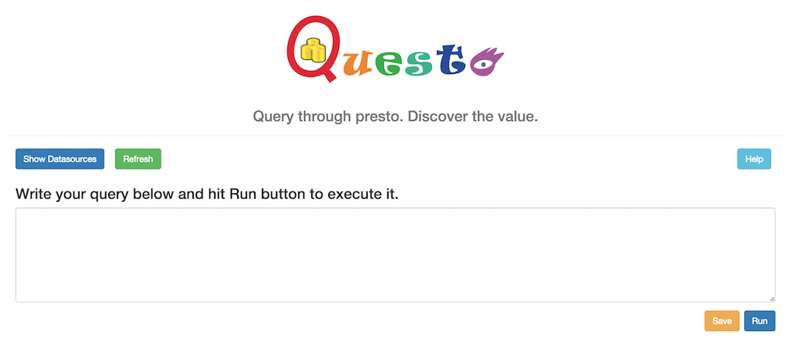
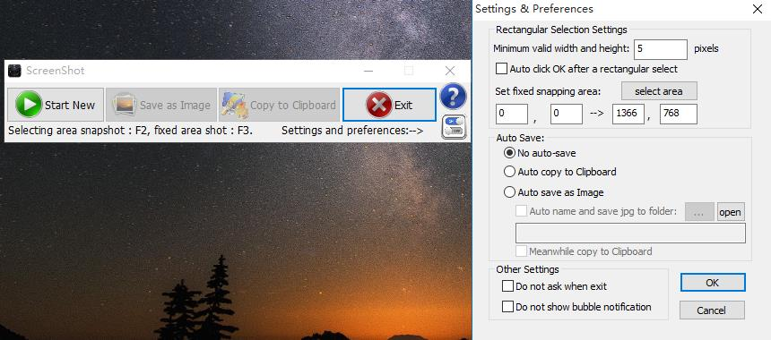
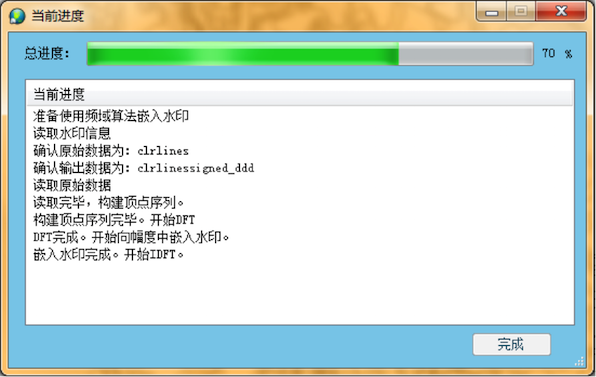

Ming Chi's Project Experience
"Explore, discover, and learn."
Description
This project is aimed at building a online shopping system with meaningful features. It has the ability to provide top-selling, complex search result and recommendation ("people bought this also bought"). Also, it provides a way for customers to chat with employees to get timely help. Plus, all users' passwords are stored as MD5 to prevent direct steal from db.
main author
Keywords: Recommendation, Java Servlets, JSP, Database, Bootstrap, JQuery, javascript, Ajax, Html, Json, Bean
Slides:
Homepage
The home page of the website.
User Login
Prompt a dialog for user to login.
Browse or search products
Users can select books from certain category, and contain certain keywords.

Supports Multiple Keywords
Support keywords separated by space, sorted by relevance.
Recommendation
Recommend books that customers who bought the current book also bought, sorted by relevance.
Shopping Cart
Live shopping cart maintained in session.
Check out and pay
Check out, and pay for books in cart.
Order History
Past orders that users have placed.
FAQ
Frequently asked questions page to help users.
Live chat with service desk.
Chat live with service representitives who helps solve problems.
Employee Portal
Employees should respond to users' service requests.
Description
This project is aimed at building a online chat system with friends feature. It has applied some restful APIs and Ajax is applied for online chat and friends list listening. Only Messages with newer timestamps are refreshed. User message and income message are displayed differently. Online and offline friends are displayed differently.
author
Keywords: Rest APIs, Java Servlets, JSP, Database, Bootstrap, javascript, Ajax, Html, Json, Bean
Description
This project is mainly about distributed database query. The restful server accepts a query from the web client, parse it into standard presto query, execute it and the result will be sent back to client and displayed as a table, or the result can be stored in the distributed database system as a new data source. Data are transferred in JSON format. Server programmed in Java.
main contributor
Keywords: facebook prestoDB, Amazon AWS server, linux, Rest APIs, jersey in setty server, MySQL, Bootstrap, JQuery, knockout.js, javascript, Ajax, Html, Json, git

Description
This project is aimed at building a game-like android app for java learning. Users take each test to check their understanding about each topic. The users can track the progress and see how they are doing in each section. The back-end is a very complex adaptive learning system and actually the json data is huge. This app only uses few of them.
back-end data simplifier & extractor
Keywords: Android, Java, Json
Description
This is a self-made app, not a class project. When using Microsoft Windows, I discovered that the snapshot tool that the system provided is inconvenient for use. So I designed this program to solve this problem by optimizing continuous shooting operation, providing fast hotkeys and fast saving prosess. UI framework is MFC.
The user can save the selected area on the screen as an image file or to the clipboard. When doing continuous shooting, the program can save the images to the folder set by the user and name each image automatically, avoiding many operations. Also, the app allows user to set an area of interest on the screen and only save the selected area. For example, you can set area of interest to the browser display region.
Please grant whole control to current user over the settings profile in the setup folder.
author
Keywords: C++, MFC, Windows APIs

Auto-name effect:

Description
In this project, a prototype GIS system with map layout and zoom functions, database functions and the map editing functions are implemented. The map layers (raster type or vector type) are overlayed and form a map. In this application, the user can create/connect to/disconnect to a geo-database, view or edit map layers (both vector layers and raster layers), and do searches. Project files are available and the map can be printed as an image.
UI framework: MFC.
Database: Microsoft SQLServer.
main designer and contributor (UI, map layout and zoom functions)
Keywords: GIS, C++, MFC, SQL Server, GDI, Computer Graphics

Description
As the key data of GIS field, vector geo-spatial data is of great importance. To protect its copyright, watermarking vector geo-spatial data is an effective method. Two algorithms are implemented, a direct-insert algorithm and a DFT(Discrete Fourier Transform)-based algorithm.
By converting watermark image's pixel data to a binary sequence, we obtain our watermark sequence of zeros and ones. Then we select a subset of coordinates from the vector data and change those coordinates according to the bit depth set, the binary sequence is embedded in the vector data.
The program is designed as a plug-in package for MapGIS 10 platform. The plug-in contains two DLLs. The C# DLL contains the UI part and the C++ DLL contains the algorithm part.
author
Keywords: GIS, C#, C++, DLL, Plugin Development
Main UI Based on Mapgis10The left part of it is the map layer tree-control. The right part of it is the database view. The middle part is the map viewer.

Inserting Watermark
Verifying Watermark

Progress Window (Multi-Threading)
Description
This is a self-made app, not a class project. A traditional calculator requires the user to type grade and credit of each course and to choose an internal algorism. Yet my calculator accepts profiles which contains GPA definitions. After defining the first time, the user can save the definition as a file and they can load this file directly next time.
Also, my calculator accepts TXT file containing academic record. As long as the user provides a TXT file with two columns (credit and grade) separated by Tab, the program can load the file and the grades and credits are added to the table. It’s easy and efficient. Users do not need to manually input (manual input is still supported, yet "load" function is more preferred).(To generate this kind of TXT file quickly, you can paste the transcript onto an Excel sheet; then you delete all columns except the two containing grade and credits and all titles; full select the remaining and paste them onto a TXT.)
UI framework is MFC.
author
Keywords: C++, MFC